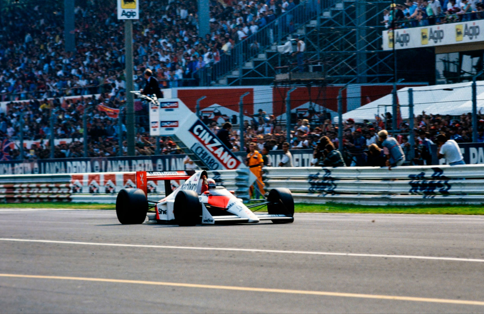
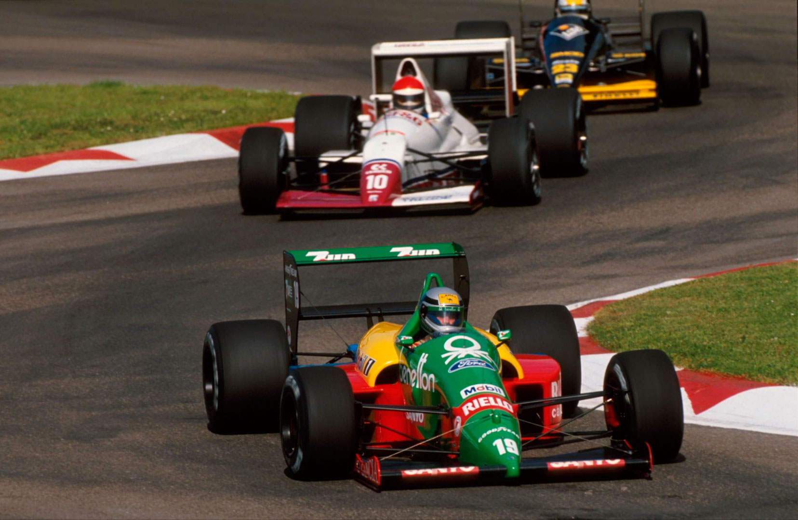
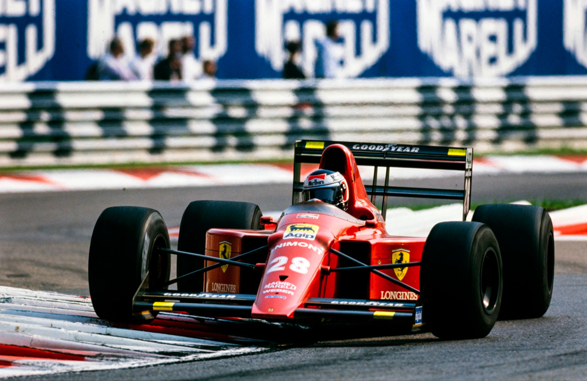
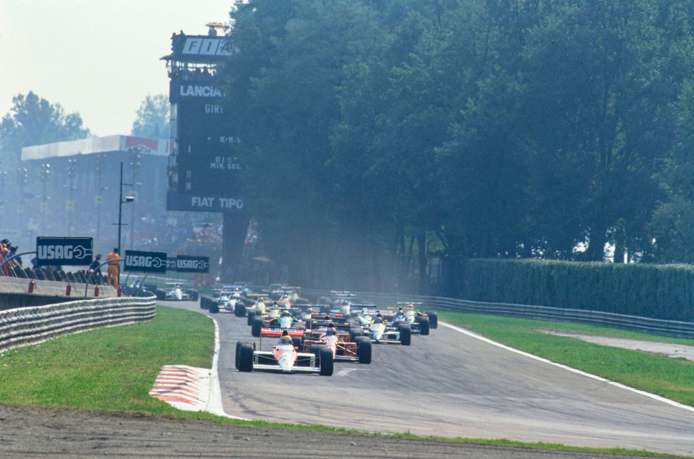
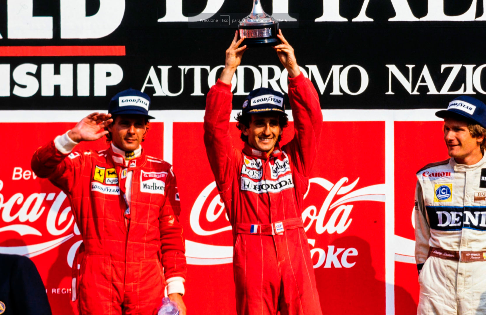

DÁDIVA DIVINA

Ferrari domina primeiro dia de treinos; Senna o segundo, e lidera toda a prova até... abandonar com motor quebrado, e Prost reclama e vence. Tiffosi aplaudem vitória do seu novo piloto... Piquet e Gugelmin abandonam.
Francisco Santos
Monza. Mais do que o santuário do automobilismo esportivo italiano, é o altar dos Ferraristi. É aqui, no meio deste frondoso e calmo Parque Municipal, que os tiffosi vêm, às dezenas de milhar, "adorar" os seus ídolos. Não se pense que, à semelhança do que acontece em Silverstone ou Brands Hatch, ou em Suzuka, esses adeptos vêm torcer pelos seus pilotos. Não, os tiffosi, uma indefinida tribo de fanáticos do automobilismo, sem cor nem raça, sem extrato social definido, desde o eficiente e bem pago executivo até ao não-tem-onde-cair-de-morto, não vão aplaudir Patrese ou Alboreto no GP, mas certamente são capazes de matar a um dia de semana, uma tia afastada ou uma avó que vive longe de Milão para se juntar às dezenas de milhar que acompanham um treino da Ferrari em Monza. É uma paixão muito especial. Conhecedora. De quem lê atentamente todas as linhas dos Autosprint ou Rombo. Mas, mais do que isso, é uma devoção a tudo que diga respeito à Ferrari. Nada mais vale, nada mais interessa, apesar do seu latente respeito pela competição. Para os tiffosi, um carro tem de ser competitivo, ter raça, e ser vermelho. Mas não um vermelho qualquer, tem de ser vermelho Ferrari (que o digam os Alfa...). Tudo o resto, todos os outros são inimigos, ou quanto muito merecedores de desprezo. Por isso, quem se interessou pelas pré-qualificações, apesar de 5 italianos se debaterem neste inferno? Alboreto, ainda há pouco venerado no seu n°28. Larini, tido em alto conceito em Maranello? Bertaggia, ídolo da F3 italiana? Que importa? As Ferrari só entram em pista mais tarde.

Nem vale a pena saber que as duas Lola/Lamborghini fizeram os melhores tempos, com Alliot na frente; ou que Gachot conseguiu passar, como Larini, e Johansson ficou de fora no seu novo chassis Onyx; e que o mesmo triste destino tiveram, além dos habituais Zakspeed, Eurobrun e AGS, Moreno e, como seria de esperar, o argentino Oscar Larrauri que substituiu o despedido Foitek na Eurobrun, e Ghinzani. Mas às 10h de 6ª feira as atenções estavam voltadas para a pista. Perdão, para o abençoado asfalto que iria ser pisado pelos sagrados Ferrari conduzidos pelos seus santos pilotos à histeria de um massacre divino de todos os demais desprezíveis carros e pilotos. Os tiffosi sempre esperam um milagre neste seu altar. Não estão preparados para menos, já que sua devoção o merece. E, muitas vezes, Deus, que além de ter reconhecida nacionalidade brasileira também arvora cidadania Milanesa, "cumpre o trato". Não foi assim há um ano, quando Senna foi afastado do caminho da redenção de uma Ferrari?

E, este ano, seria mais fácil sair do Parque com motivo para comemorar. O detestado Professor Prost seria a partir de agora tratado como um piloto Ferrari, embora ainda pilotasse um McLaren inimigo. Afinal, até também tinha um pouco de vermelho. Mas muita atenção: não confundir com esse demônio brasileiro. Mas, para gáudio das massas, foram mesmo os dois santos pilotos Ferrari, com Berger a bater Mansell por 0,005s na pole provisória, que dominaram na 6ª feira, apesar de Senna, e do melhor tempo de Prost, feito, no entanto, já com o treino terminado. Claro que, no sábado, a romaria ao santuário foi ainda maior, tanto mais que os céus, claro, ajudavam: o dia nasceu chuvoso, e dificilmente o tempo de Berger seria batido. Mas as "forças do mal" estavam prontas para contra-atacar. Contra tudo o que era Ferrari: seus carros e até seu futuro novo piloto. Perante os olhares incrédulos do Giovanni Agnelli, Presidente do Grupo FIAT, Ayrton roubou o melhor tempo à Ferrari com o que Ron Dennis classificou "a sua melhor pole de todas". E, Prost mantinha-se em quarto, "cheio de problemas, com chassis e motor deficientes". Entretanto, Modena havia sido excluído do GP por não parar para uma pesagem; Cheever não se qualificava; Alliot surpreendia de novo com o 7° tempo; e Sala destruía um chassis Minardi num embate frontal.

Domingo era só rezar, já que Ayrton tinha sido o mais rápido no warm-up. Prost não se conformava com a diferença de 2s para o outro McLaren. Já no pré-grid é que se decidiu trocar as regulagens para as do brasileiro, e confessou que o comportamento melhorou. Mas não o suficiente para poder acompanhar Ayrton na corrida, que disparou da pole e não deu confiança a santo nenhum, colocando-se imediatamente fora do alcance de S.Berger, S.Mansell, ou do recém-canonizado Prost, quanto mais dos humanos Boutsen, Nannini, Patrese e Alesi, que tinham a honra de os seguir, o que Pirro e Alliot não tiveram (transmissão e acelerador preso). Mansell não conseguia manter o mesmo ritmo de Berger, e pouco a pouco caia nas garras, perdão, debaixo das asas de Prost, que, à medida que o carro ficava mais leve, aumentava o ritmo, passava Mansell à 21ª volta, e reduzia a vantagem de Berger, até o ultrapassar vinte voltas depois e se instalar na segunda posição. Berger fazia uma prova de defesa, procurando, perante os tifosi, terminar a sua primeira corrida do ano. Quatro voltas depois de passar Berger, Prost tem uma visão celestial: na aproximação da Parabólica vê o outro McLaren-Honda, o que não tinha problemas, o que liderava folgado, atravessado, parado na pista numa posição até perigosa, já sem o seu demoníaco piloto. Era a mão divina que baixava em Monza. O motor Honda "Evolução 5" de Ayrton quebra, e espalha óleo sobre as rodas do McLaren, obrigando Ayrton a rodar. Estava aberto o caminho para uma vitória aplaudida pelos tiffosi e que dá a Prost uma vantagem de 20 pontos no campeonato. Em segundo, Berger. Mansell havia abandonado com problemas de câmbio. Boutsen fez uma das suas melhores provas do ano, enquanto Piquet sai da pista para evitar Gachot, que roda à sua frente. Alesi foi de novo estupendo no Tyrrell, chegando em quinto, e Brundle conseguiu um precioso ponto para a Brabham. Menos preciosa foi a cena do pódio, com Prost a cativar os seus futuros fãs e a desafiar ainda mais Ron Dennis (ardente colecionador dos troféus dos seus pilotos) ao oferecer o troféu da vitória aos tiffosi abaixo do pódio, ao que Dennis respondeu atirando o segundo troféu aos pés de Prost. Tristes cenas que a F1 proporciona. E mais se seguirá, com este clima de Prost vs McLaren vs Honda vs Senna.
